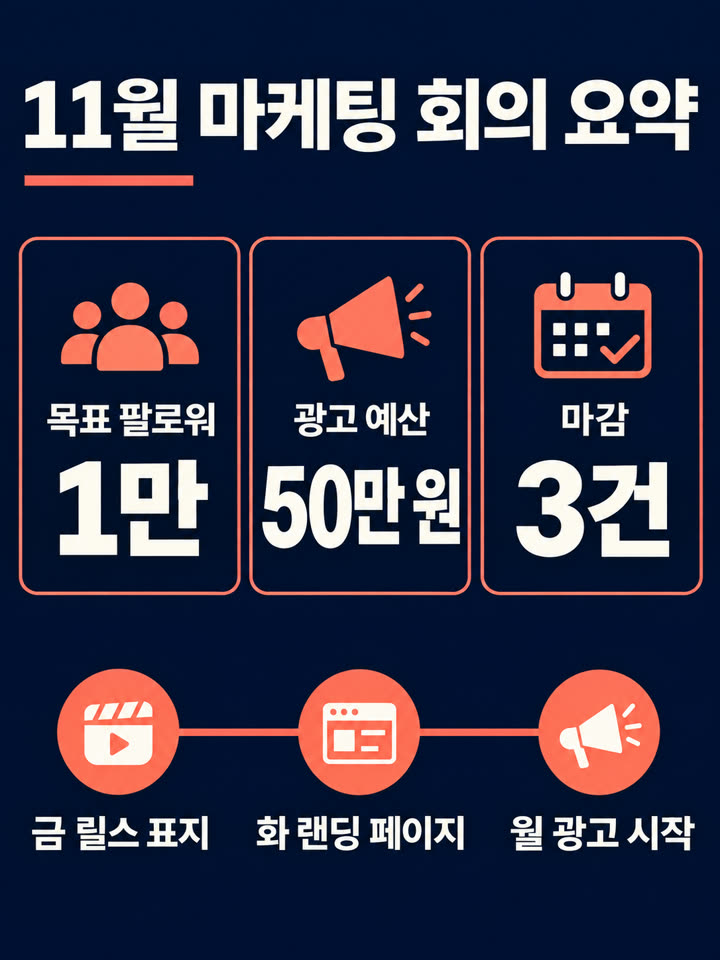

AI 자료실 No.006
1시간 회의록을 웹툰 한 장·보고서 한 장으로 — 지시문 3개
AI My Ground 쇼츠에서 보여 드린 웹툰과 보고서를 만든 순서 그대로입니다. 글로 보내면 안 읽던 팀원들도 그림 한 장은 끝까지 봅니다.
직접 만들어 보고 정리한 자료입니다. 내 작업물에는 자유롭게 쓰셔도 됩니다. 다만 이 지시문과 내용을 그대로 옮겨 다른 자료·콘텐츠로 다시 배포하는 것은 삼가 주세요. 사진은 본인 사진이나 사용 허락을 받은 사진만 쓰세요.
핵심 살펴보기
- 글 쓰는 AI에게 회의록을 주고 네 컷 대본(대사 15자 이내)부터 뽑습니다.
- 그 대사를 따옴표로 정확히 넣어 이미지 AI에게 그리게 합니다. 이래야 한글이 안 깨집니다.
- 같은 내용으로 인포그래픽 보고서 한 장도 만듭니다.
먼저, 이런 결과가 나옵니다
1시간짜리 마케팅 회의록 한 개로 만든 두 장입니다.

1단계 · 대본
1. 회의록을 네 컷 대본으로
- 글 쓰는 AI 채팅창(클로드·챗GPT 등)을 엽니다.
- 아래 문장 끝에 회의록을 통째로 붙여 넣습니다.
그대로 복사
아래 회의록을 읽고 네 컷 웹툰 대본으로 정리해 줘. - 결정된 것, 담당자, 마감일만 골라. - 칸마다: 장면 한 줄 + 누가 하는 말 한 줄(15자 이내). - 4번째 칸은 할 일 개수와 마감을 정리하는 장면. [여기에 회의록 붙여 넣기]
성공 확인 칸마다 장면 한 줄과 짧은 대사 한 줄, 4번째 칸에 할 일 정리가 나오면 됩니다.
대사가 길면 그림 속 글자가 깨지기 쉽습니다. 15자를 넘으면 줄여 달라고 하세요.
2단계 · 그림
2. 대사를 넣어 웹툰 그리기
- 이미지 만드는 AI 채팅창을 엽니다.
- 아래 양식의 [ ]에 1단계 대본을 옮겨 적습니다. 대사는 따옴표 안에 한 글자도 틀리지 않게 넣으세요.
[ ]만 채워서 쓰기
A polished Korean webtoon-style 4-panel comic on one vertical page, clean professional digital illustration with consistent cute characters ([참석자 설명, 예: a team leader with glasses, a designer with a beanie]), soft pastel colors, rounded speech bubbles with SHORT, LARGE, CORRECTLY SPELLED Korean text only as written here. Panel 1: [장면] says "[대사]". Panel 2: [장면] says "[대사]". Panel 3: [장면] says "[대사]". Panel 4: [장면] holding a sign "[할 일 정리]". No other text.
성공 확인 등장인물이 칸마다 같은 얼굴이고, 말풍선 글자가 맞춤법대로 나오면 됩니다.
글자가 깨지면 "말풍선 글자만 원래 대사로 정확히 고쳐 줘"라고 한 번 더 요청하세요.
응용
3. 같은 내용으로 보고서 한 장
윗사람 보고용은 웹툰보다 인포그래픽이 낫습니다. 숫자 세 개와 일정 세 개만 넣으세요.
[ ]만 채워서 쓰기
A premium modern infographic report page, vertical, sleek editorial design like a top consulting firm one-pager: deep navy with coral accents, clean grid, large bold numbers, simple flat icons. Korean text only as written, short, large and correctly spelled. Title: "[회의 제목] 요약". Three big stat cards: "[숫자 1]", "[숫자 2]", "[숫자 3]". A timeline row with three steps: "[요일 할 일]", "[요일 할 일]", "[요일 할 일]". Generous white space. No other text.
성공 확인 큰 숫자 세 개와 일정 세 칸이 한눈에 보이면 됩니다.
완성 후 이 세 가지만 확인하세요
- 말풍선·숫자 글자가 회의록 내용과 똑같은지
- 담당자와 마감일이 바뀌어 들어가지 않았는지
- 회사 기밀이나 개인정보가 그림에 들어가지 않았는지
자주 묻는 것
왜 한 번에 안 하고 두 단계로 나누나요?
이미지 AI에게 회의록을 통째로 주면 내용을 고르지 못하고 글자도 자주 깨집니다. 글 AI가 고른 짧은 대사를 그대로 넣으면 훨씬 정확했습니다.
회사 회의록을 넣어도 되나요?
회사 보안 규칙을 먼저 확인하세요. 외부 AI에 올리면 안 되는 내용은 이름·숫자를 바꿔서 넣으세요.